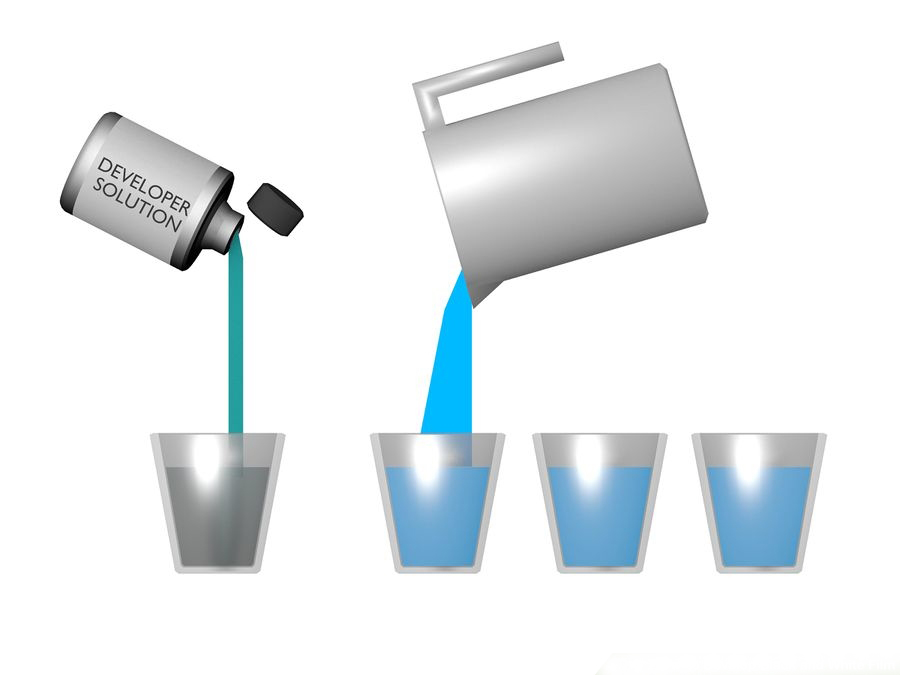
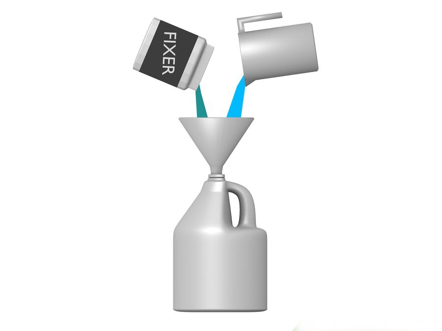
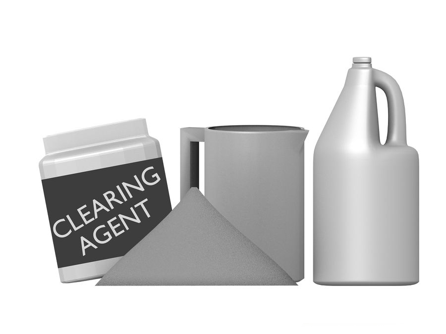

Dilute the chemicals. Most photographic chemicals come in concentrate form, which needs to be mixed with water. You are going to use the graduated cylinder to measure the chemicals and water, and the gallon jugs to store them.
The Developer - 1:3 Chemical to water mix. That is, 1 part developer to 3 parts water. This gives you a "stock" solution. Fill one gallon jug with this stock solution. The stock solution will be diluted more before using it on the film. Diluting this stock solution will provide you with a "working" solution.

The Fixer - 1:4 Chemical to water mix. Mix the fixer and water together and store in a gallon jug. This is also a working solution.

Hypo-Clearing Agent - Mix the full packet (4.4oz) with 1.25 gallons (4.7 L) of water. This chemical comes as a powder, and you need to ensure that it is thoroughly mixed. Store in a gallon jug.
